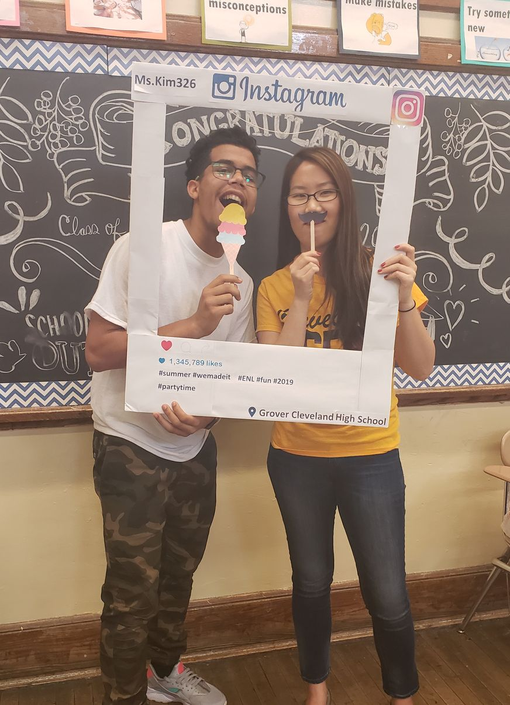

About me
I am a teacher turned full-stack software engineer, specializing in responsive web development. What inspired me to become a software engineer was my passion for creating beautiful apps from scratch while solving interesting problems. Thanks to my background in teaching and love for good design, I am a natural leader with excellent communication skills and also highly attentive to details. I recently graduated from Flatiron School's Software Engineering program with a full scholarship from the New York City Talent Tech Pipeline. I've built several multi-page apps using React, Redux while implementing user auth and storing encrypted data.
Prior to coding, I was a high school ESL teacher working for the NYC DOE. Working in one of the most high-pressured and fast-paced environments of inner-city high schools, I skilled up in prioritizing tasks, collaborated with colleagues, and engaged students (as well as teachers) to become active learners. I've pitched ideas and led several school-wide workshops that brought qualitative results on overall school performance. My strong work ethic translates to my approach to coding as well. I thrive working in cross-functional teams and education is in my DNA. I love to mentor those that need help and create a nurturing culture that promotes growth and trust in the workplace.
Outside of work, you'll find me attempting a new recipe in my tiny nyc kitchen, petting all the good dogs in nyc and hiking with my rescue puppy, Cooper.
download my resume
